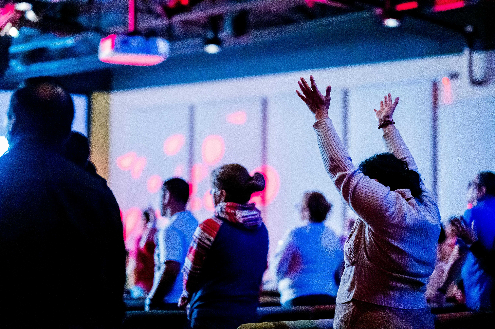

MUDANDO VIDAS
Através do
Ministério de Louvor!


Através do
Ministério de Louvor!
Acreditamos que para ter um ministério de
louvor cheio da presença de Deus é preciso
algumas práticas.
Através da Worship Jesus, você encontrará
conteúdos para o seu desenvolvimento técnico
e espiritual, mudando seu relacionamento com
Deus e seu ministério de uma vez por todas!

Como apoio da ODS 4 (Educação de Qualidade)
a Worship Jesus tem como objetivo promover
uma educação acessível e inclusiva para
músicos e líderes espirituais.
Inspirar e
capacitar pessoas
no ministério de
louvor a
aprofundarem seu
relacionamento
com Deus.
Desenvolvendo
transformação em
suas vidas.
Ser referência no
desenvolvimento de
músicos e líderes,
criando uma cultura
de excelência
musical e
comprometimento
espiritual.
Adoração
Excelência
Dedicação
Comunhão
Espiritualidade